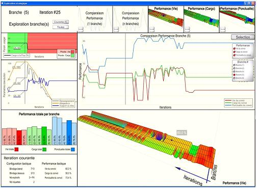

Université Laval (ULaval)
Rue de l'Université 2325, Québec, QC G1V 0A6, Canada
https://www.ulaval.ca
I was a postdoctoral researcher in the Cognition - Distribution - Organisation - Technologies (Co-DOT) laboratory at Laval University (ULaval).
Research

-
Tremblay, S., Gagnon, J.-F., Lafond, D., Hodgetts, H. M., Doiron, M., & Jeuniaux, P. P. J. M. H. (2017). A cognitive prosthesis for complex decision-making. Applied Ergonomics, 58, 349-360. https://doi.org/10.1016/j.apergo.2016.07.009
-
Gagnon, J.-F., Jeuniaux, P., Dubé, G., & Tremblay, S. (2011). Dynamic cognitive task modeling of complexity discovery: a mix of process tracing and task analysis. Proceedings of the 55th Annual Meeting of the Human Factors and Ergonomics Society (HFES). http://doi.org/10.1177/1071181311551280

-
Tremblay, S., Jeuniaux, P., Romano, P., Lowe, J., & Grenier, R. (2011). A multi perspective approach to the evaluation of a portable situation awareness support system in a simulated infantry operation environment. 2011 IEEE International Multi-Disciplinary Conference on Cognitive Methods in Situation Awareness and Decision Support (CogSIMA 2011). http://doi.org/10.1109/COGSIMA.2011.5753429
— 16 September 2023